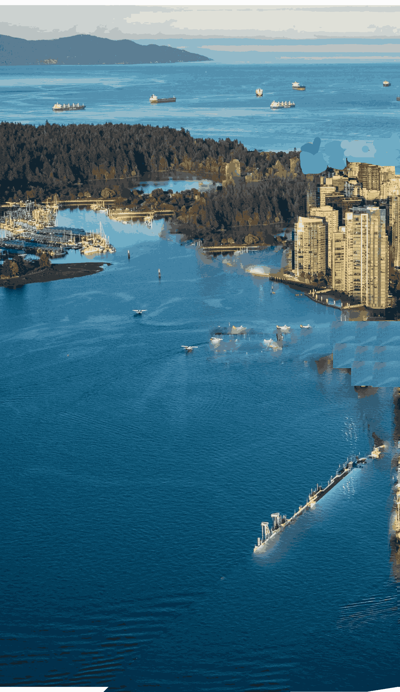
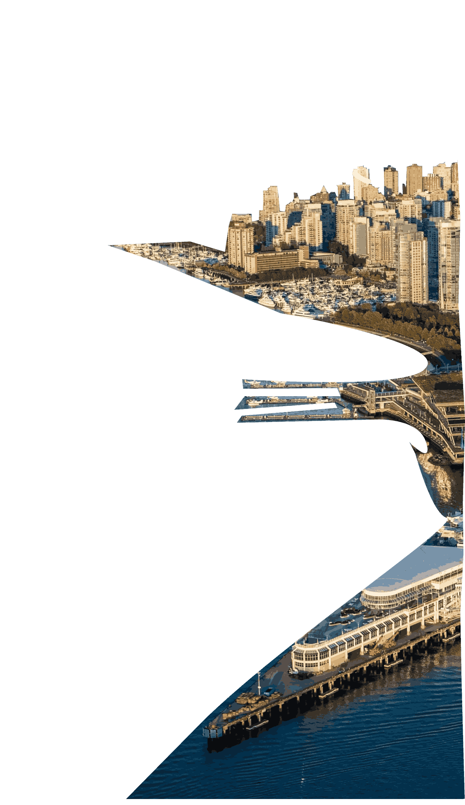

バンクーバー・
イズ・アー・シティー・
ノーン・フォー
is tri beauty
Nature is key to one the wind
Two the water
Thee the mountiens are third.


イエス X੨ come see this picture
Northside Near stanaely park
with a very beautiful lake
on the bridge ther
crosses bike lanes and easily
accessable in 29 minute ride.